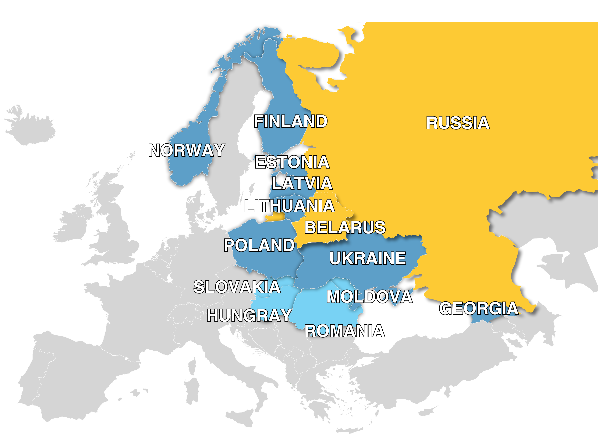

About
PhD Research
How Do Picturebooks from European Borderlands (2015–2025) Function as Cultural Practices to Construct Critical Hope?
This research begins with an embodied moment: during an air raid alert in Kyiv in the summer of 2024, I observed a mother and her daughter seeking refuge in a picturebook inside a bookstore shelter on Independence Square. That encounter crystallised the central hypothesis of this study: in the European borderlands, picturebooks may have transcended their traditional pedagogical functions to become a cultural technology of hope, survival mechanisms that transform systemic uncertainty into micro-possibilities.
The research is anchored in fourteen nations across the European borderlands between 2015 and 2025, a decade shaped by the Crimea crisis, mass displacement, and full-scale war. To analyse how hope operates across this corpus, I developed the Four Ps Framework (Philosophy, Psychology, Pedagogy, and Politics), constructed from a systematic review of 918 interdisciplinary definitions. The study asks: how do picturebooks from this region employ multimodal narrative strategies to construct critical hope for child readers while honestly acknowledging the reality of trauma?

Publications
Journal Articles & Book Chapters
2025
Post-apocalyptic Narratives for Climate Change Education
Chang Hasheminezhad-Li. Climate Literacy in Education, Vol. 3, No. 3 (Fall 2025). DOI: 10.24926/cle.v3i3.7010
2025
BIBI Puzzle Cards e Visual Frames. Visual Literacy e ricostruzioni biografiche in gioco
Marnie Campagnaro and Chang Li. In BIBI Research Handbook: Biografie e Biofiction d'Infanzia, Eds. Marnie Campagnaro & Lea Ferrari, pp. 97–111 (Dec 2025)
2023
Reshaping the Balance: How Gilman Critiques and Constructs a Feminist Utopia in Herland
Chang Li. Nesir: Edebiyat Araştırmaları Dergisi, 2023. DOI: 10.5281/zenodo.7221215
2020
Kim Si-seup's Complex of Qu Yuan and ChuCi: Centering on the Idea-image and Acceptance from ChuCi
金時習之屈騷情結——以楚辭意象受容爲中心
Journal of Chinese and Korean Studies, Vol. 7
Conference Presentations
Apr 2026
StrasbourgLearning to Shape Europe: Young Generations, Education and Democratic Participation
European Student Assembly, European Parliament, Strasbourg
Feb 2026
MaltaAm I a Voice or a Traitor? Dialogues with Youth from Aggressor States
Seen and Heard International Conference, University of Malta
Nov 2025
VeniceThe Taste of Authoritarian: How Do Food Spaces Function as Sites of Control and Resistance in Picturebooks?
Eating Indoors and Outdoors in Children's Literature, Ca' Foscari University of Venice
Aug 2025
KoreaThe Potential of Post-Apocalyptic Young Adult Novels as a Vehicle for Youth Engagement in Ecological Transformation
2025 IBBY Asia Pacific Regional Conference, Suwon
Projects
P.A.G.E.S.
Picturebooks As Gateways to European Society
A series of interactive workshops at the University of Padova and the University of Wrocław, leveraging picturebooks as a "universal language" to foster cross-cultural dialogue on human rights, gender diversity, and war trauma. Funded by the Arqus European University Alliance (2025).
BIBI
Biographies and Biofiction of Childhood
A national research and educational intervention programme led by the University of Padova, funded by the Italian Presidency of the Council of Ministers (Dept. for Equal Opportunities). BIBI investigates how the "storied lives" of diverse figures can offer young readers alternative role models, connecting visual narratives with gender pedagogy.
Roles & Engagement
2026
International Youth Library Fellow
Internationale Jugendbibliothek, Munich
2024 – Present
Arqus University Alliance Ambassador
University of Padova